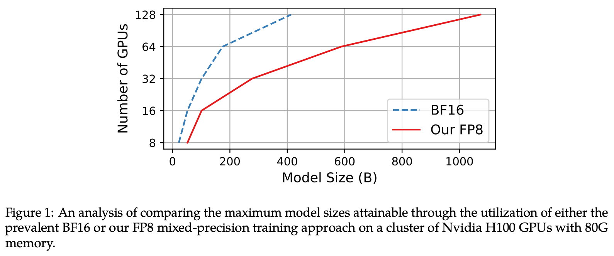
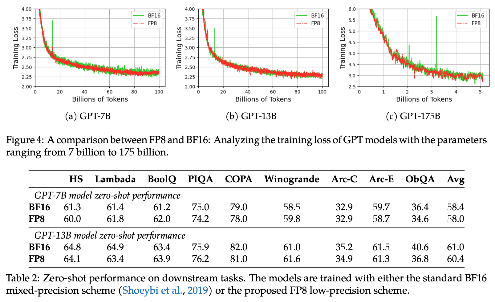
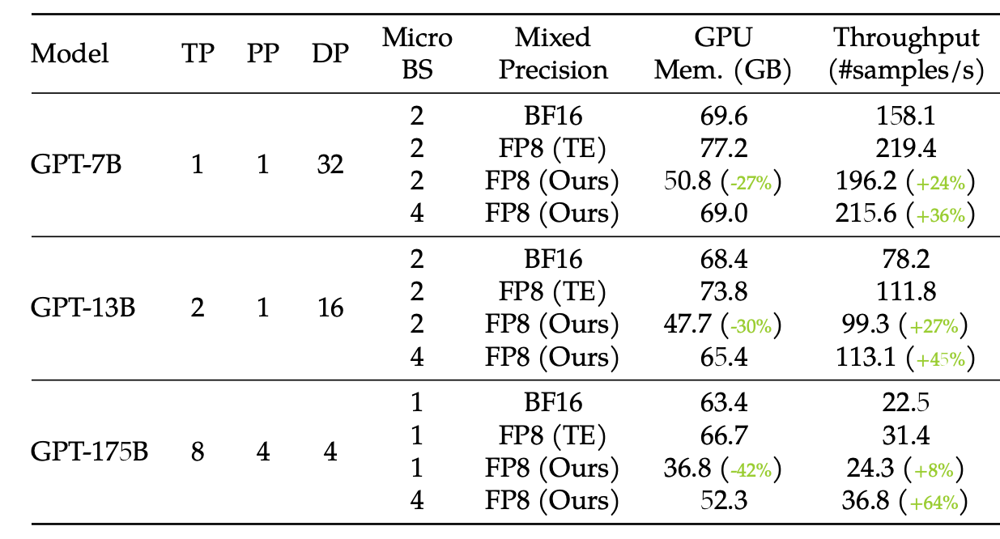
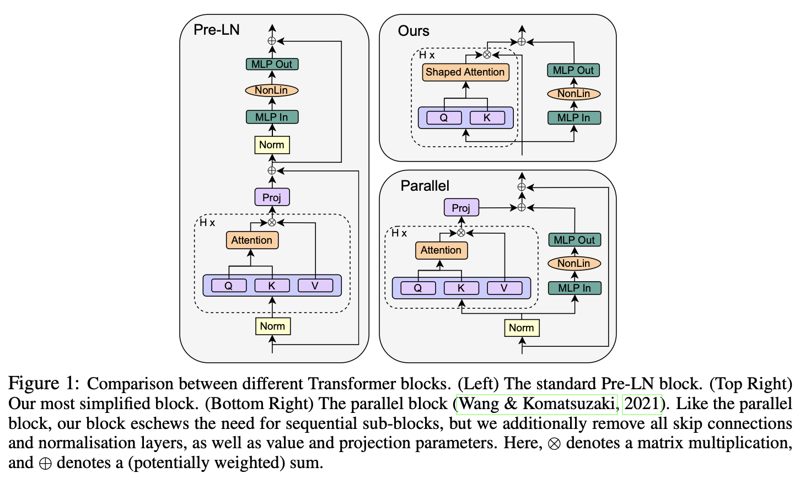
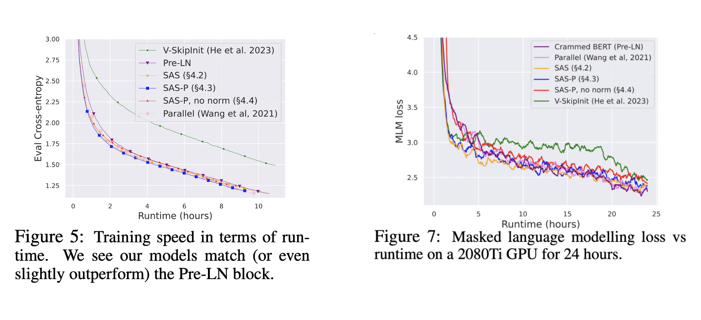
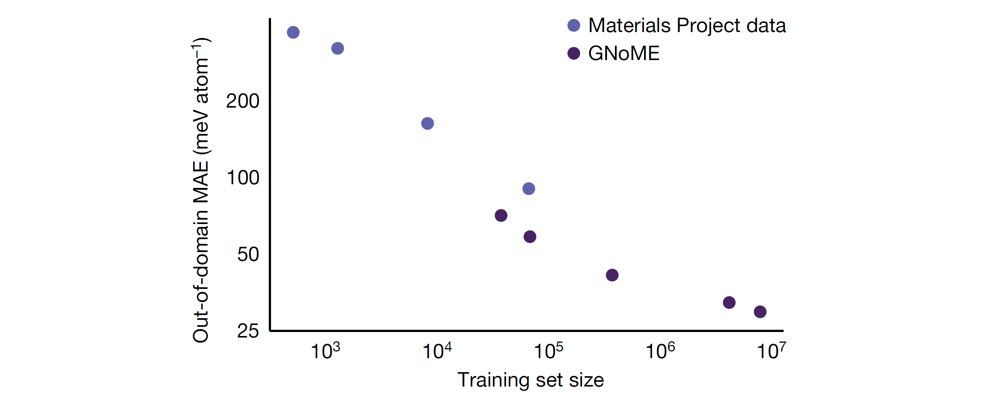
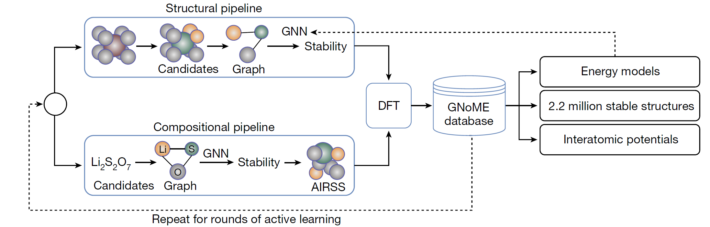
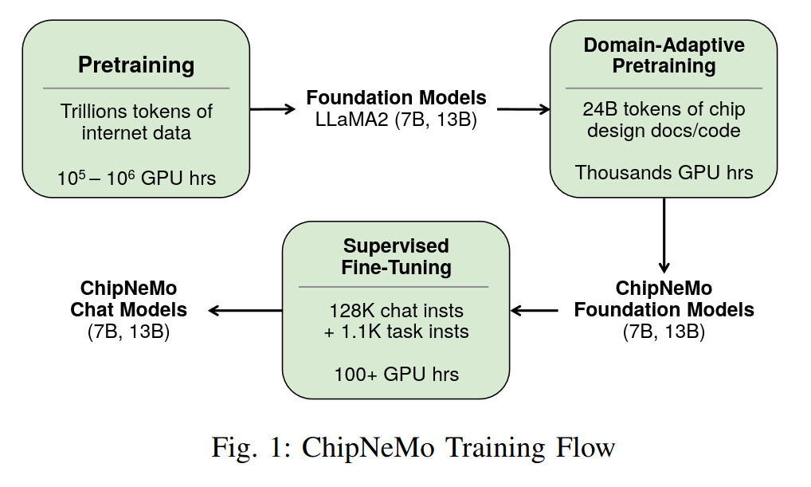
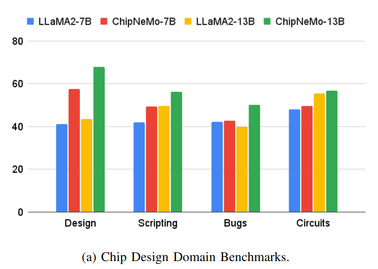
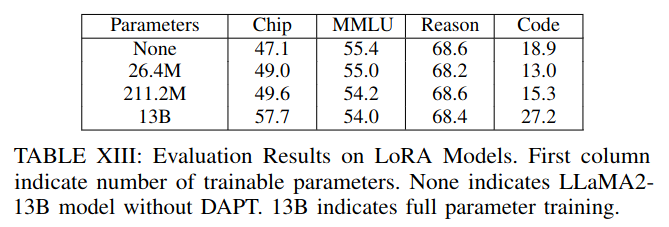

December Papers: FP8 Training & Simpler Transformers
The last month saw impressive developments in the space of efficient transformers and applied ML, from materials discovery to chip design.
Researchers at Microsoft showed that FP8 could be used in parts of the LLM training process that until now had been kept in higher-precision, and work from ETH Zurich suggested a simplified way of designing transformer-like models.
In terms of applications, DeepMind have impressive results showing that GNNs can be used in the discovery of new inorganic crystals — a key building block of many modern technologies. Nvidia have also trained up a model to assist their engineers on chip design. This is a neat feedback loop: their chip design has facilitated better LLMs, and now their LLMs could facilitate better chip design. How useful this will be in practice remains to be seen.
We hope you enjoy this month's papers as much as we did! If you have thoughts or questions, please reach out to us at @GCResearchTeam.
FP8-LM: Training FP8 Large Language Models
The key idea
The authors show that you can use FP8 weights, gradients, optimizer states and distributed training without loss of accuracy or new hyperparameters. This is great because it reduces the memory overhead of training, as well as the bandwidth costs.
They train up to 175B GPT models on H100s, with a 64% speed-up over BF16. Pretty impressive, and a bit faster than Nvidia’s Transformer Engine.

Background
The fact that LLMs can be trained “in FP8” has been well established{:target="blank" rel="noopener noreferrer"}, but what does this mean? In reality, all FP8 training is _mixed-precision as putting all tensors in FP8 degrades the model. The simplest and most common approach is just to cast linear layers to FP8, gaining the benefit of improved FLOP/s assuming you have hardware with accelerated FP8 arithmetic.
However this misses out on a second benefit - reduced memory and bandwidth costs if we can also store/load values in FP8. It’s less clear from previous literature what else you can put in FP8 without things degrading.
Their method
Gradients
The issue here is scaling the gradient all-reduce (\(g = \sum_{i=0}^N g_i / N\)) so it doesn’t overflow or underflow the narrow FP8 range. Two naïve approaches are to either apply the \(1/N\) scaling to each individual \(g_i\) before the reduction (risks underflow), or to the final \(g\) afterwards (risks overflow).
They fix this by partially scaling before, and the rest after the all-reduce. The scaling factor used is determined empirically by gradually increasing the scale, but backing off on overflows.
Their FP8 tensors also have an associated scale. To make this work with the existing Nvidia comms library, they also add a scheme to sync up scales across distributed tensors before the all-reduce.
Optimiser
The most basic Adam implementation uses FP32 for all elements (4 bytes):
They suggest that the following mix of FP16/8 is viable without degradation:
I think the previous assumption was that the best you could do was (2 + 1 + 2 + 4) here - so intriguing to know that the Adam moment states may be able to go smaller. This is their storage format; it’s not clear what formats are used in the update computation.
Results
Their method gets significant speedups versus the BF16 baseline, and uses a little less memory (I would have expected a larger improvement? Though they suggest you get more savings as you scale, as in Fig. 1).
In terms of throughput they only beat TE at the large-scale (due to comms being more of an issue here), but there is a consistent memory improvement.

Key to all of this of course is their assertion that these efficiency savings don’t degrade the model. Looking at the loss curves and downstream performance, this seems to hold up:

Overall, their claim to be the best FP8 solution seems justified. I imagine many organisations with FP8 hardware will adopt a trick or two from this paper - especially as they provide a PyTorch implementation.
Simplifying Transformer Blocks
The key idea
Are there any parts of the standard transformer architecture that can be simplified without diminishing performance?
The authors propose several simplifications to the conventional transformer blocks with no loss in training speed, parallelising attention and MLP layers while fully removing skip connections, value and projection parameters, as well as normalisation layers.

Their method
The authors utilise signal propagation theory as well as empirical evidence to motivate the proposed architectural changes. Notably, they observed:
- Skip connections can be safely removed from the attention and MLP layers without affecting training performance, as long as they are appropriately compensated by changes to weight initialisations.
- Fixing the skip connection issues allowed the authors to remove the value and projection matmuls from the attention layers altogether without further degradation.
- Normalisation layers implicitly down-weight residual branches: as this is achieved in the first two steps, they can also be removed. However, the authors note that leaving the normalisation layers led to a slight improvement in training loss.
Results

The authors tested the simplified transformer architecture on both decoder-only model training (Figure 5) and encoder-only training (Figure 7). In both cases, they find that their architecture (SAS/SAS-P) is able to reach baseline performance, while providing ~15% throughput boost.
Takeaways
The paper gives good insight into why some of the standard architectural choices are needed in transformer models, and how these can be addressed differently through weight reparametrisation/initialisation. The models investigated are relatively small in size (100-300M), so more evidence is needed to show the practicality of the changes at larger model sizes.
Scaling Deep Learning for Materials Discovery
The key idea
The paper presents a strategy to efficiently explore the space of possible inorganic crystals, employing Graph Neural Networks (GNNs) to filter candidate structures for further expensive computational modelling using Density Functional Theory (DFT). By incorporating the new properties predicted using DFT back into the training set and periodically retraining the GNN, the authors describe an active learning approach that bootstraps their discovery process.

Background
The discovery of energetically favourable inorganic crystals enables breakthroughs in key technologies like microchips and batteries, but traditionally the discovery process is bottlenecked by expensive physical experimentation or first-principal computational simulations. There has been great interest in machine-learning approximations of computational methods such as Density Functional Theory (DFT), but so far they have not been successful in predicting crystal stability. Quantity of available training data is often seen as a limiting factor.
Their method
For breadth of search, the authors employ two frameworks for candidate generation.
The Structural Pipeline: Here new candidates are formed by modifying existing crystals, prioritising discovery and incorporating symmetry-aware partial substitutions to efficiently enable incomplete replacements. Candidates are filtered using the GNoME models, and employ a deep ensemble strategy to quantify uncertainty.
The Compositional Pipeline: Compositional models predict stability without structural information (just using the chemical formula). After filtering using GNoME models, randomised structures are evaluated using Ab Initio Random Structure Search (AIRSS).

The GNoME models are message-passing networks which take one-hot embedded elements as nodes and predict the total energy of a crystal. In Structural models, there is a node per atom, and edges are added to the graph between any two nodes that are closer than an interatomic cut-off distance. However, for Compositional models, there is one node per element present, and the relative frequency of each element is encoded by scaling the magnitude of the embeddings. An edge is added between every node, so these GNNs begin to look a bit like a Transformer operating on the chemical formula.
Results
Exploration using GNoME has produced 381,000 new stable materials, which the authors suggest is an order of magnitude larger than the set of previously known materials. 736 of these have since been physically realised in a laboratory setting.
ChipNeMo: Domain-Adapted LLMs for Chip Design
The key idea
The authors describe the practical application of an LLM to assist engineers working on chip design at NVIDIA. They explore the importance of domain adaptation, scale and retrieval augmentation to achieve good performance in three applications: an engineering assistant chatbot, electronic design automation (EDA) script generation and bug summarisation.

Their method
ChipNeMo takes a pretrained generalist LLM such as LLaMA2, then adapts & fine-tunes the model for better performance on chip design tasks. First, the tokeniser is augmented by extending the byte pair encoding (BPE) vocabulary from a domain-specific tokeniser, going from 32k -> 41k total tokens. The model is fine-tuned on an internal chip design dataset, then fine-tuned for chat on a mixture of open-source general and internal in-domain examples. Finally, retrieval augmentation is used with a domain-adapted retrieval embedding model based on E5.
Results
Results show the utility of domain adaptation and retrieval in boosting task performance, allowing a much smaller domain-adapted model to often outperform a large generalist model.

Some interesting points: - The benefit of domain-adaptation is task-dependent, e.g. for Python coding the larger generalist model (LLaMA2-70b-chat) outperforms ChipNeMo-13b, but vice versa for TCL coding. - They found full fine-tuning to outperform LoRA.
